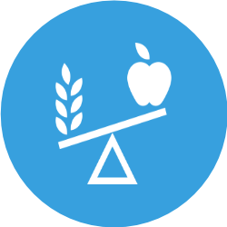

Tradição
Dentro de sua tradição na área da saúde, contando com um hospital escola de referência nacional

Formação
A Univás desenvolve, para curso, um projeto pedagógico que permite uma formação ampla do nutricionista

Atividades
Nutrição Social, Nutrição Esportiva, Nutrição Clínica, Marketing de Alimentos e Nutrição
Estrutura
Em sua estrutura, o curso conta com laboratórios específicos e corpo docente altamente qualificado.